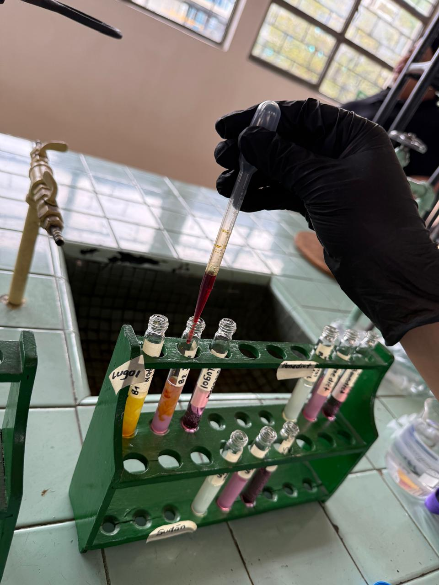

Análisis bioquímico de alimentos naturales, procesados y ultraprocesados y su relación con la alimentación, la nutrición y la salud estudiantil
La realidad detrás de lo que consumimos

Los alimentos ultraprocesados hacen parte frecuente de la dieta de muchos estudiantes,
especialmente productos como gaseosas, dulces, paquetes y comidas rápidas. Aunque son
fáciles de conseguir y atractivos, muchas veces se consumen sin conocer su composición
ni cómo el procesamiento industrial modifica sus propiedades.
Este tema se relaciona con la bioquímica porque los alimentos contienen biomoléculas
como carbohidratos, lípidos y proteínas, esenciales para el funcionamiento del cuerpo.
Mientras los alimentos naturales conservan mejor su valor nutricional, los
ultraprocesados suelen contener más azúcares, grasas, sodio y aditivos artificiales,
lo que puede afectar el metabolismo y la salud.
Por eso, esta investigación busca comparar alimentos naturales, procesados y
ultraprocesados mediante pruebas de laboratorio sencillas, análisis de pH y revisión
de etiquetas nutricionales. Además, contará con apoyo de un ingeniero agroindustrial
para relacionar los resultados con la industria alimentaria. El objetivo es promover
el pensamiento científico y una alimentación más consciente entre los estudiantes.
¿Qué está pasando con lo que comemos?
Actualmente, muchos estudiantes consumen alimentos ultraprocesados por su fácil acceso,
bajo costo y sabor llamativo. Sin embargo, estos productos suelen contener altos niveles
de azúcares, grasas, sodio y aditivos artificiales que pueden afectar la calidad de la alimentación
cuando se consumen con frecuencia.
El aumento en el consumo de estos productos ha generado preocupación debido a que, en muchos casos,
reemplazan alimentos naturales como frutas, verduras, cereales y alimentos frescos que aportan una
mayor cantidad de nutrientes esenciales para el organismo.
Muchas veces se consumen sin conocer realmente su composición química y nutricional.
Por eso, este proyecto busca comparar alimentos naturales, procesados y ultraprocesados
mediante pruebas bioquímicas que permitan identificar carbohidratos, proteínas,
lípidos y niveles de acidez, con el fin de analizar cómo el procesamiento industrial
modifica las propiedades bioquímicas y la calidad nutricional de los alimentos.
Comprender estas diferencias permitirá reconocer cuáles alimentos conservan mejor sus nutrientes
originales y cuáles presentan cambios importantes debido a los procesos industriales,
favoreciendo decisiones alimentarias más conscientes y saludables.

Lo que queremos describir

¿Qué diferencias bioquímicas presentan los alimentos naturales, procesados y
ultraprocesados en relación con su contenido de carbohidratos, proteínas,
lípidos y niveles de pH?
Además, se busca determinar cómo los procesos industriales influyen en la composición
química de los alimentos y de qué manera estos cambios pueden afectar su valor nutricional.
La investigación pretende establecer comparaciones entre distintos productos de consumo
frecuente para identificar cuáles conservan mejor sus propiedades originales y cuáles
presentan mayores modificaciones debido al procesamiento.
También se pretende relacionar los resultados obtenidos en laboratorio con la información
nutricional presente en las etiquetas de los productos, permitiendo comprender mejor la
relación entre alimentación, nutrición y salud.
La importancia de mirar más allá de la etiqueta
Esta investigación es importante porque permite comprender cómo el procesamiento
industrial modifica la composición bioquímica y la calidad nutricional de los alimentos.
A través de pruebas experimentales, se analizarán carbohidratos, proteínas,
lípidos y niveles de acidez en alimentos naturales, procesados y ultraprocesados.
Además de fortalecer el aprendizaje práctico de la bioquímica, el proyecto busca
generar una mirada más crítica frente a los productos que consumimos diariamente
y relacionar la ciencia con situaciones reales de la vida cotidiana.

¿A qué queremos llegar?

Identificar biomoléculas
Detectar la presencia de carbohidratos, proteínas y lípidos utilizando reactivos bioquímicos que producen cambios de color visibles.
Comparar niveles de pH
Analizar las diferencias de acidez y alcalinidad entre los distintos grupos de alimentos para determinar posibles efectos del procesamiento.
Relacionar nutrición y salud
Interpretar los resultados experimentales junto con la información nutricional de los productos para comprender mejor su impacto en la alimentación diaria.
Conceptos clave
Los nutrientes que estudiamos son llamadas biomoléculas, son compuestos químicos esenciales para la vida. A través de los alimentos obtenemos estas sustancias, que permiten producir energía, construir tejidos y regular procesos biológicos fundamentales.
Carbohidratos
Son la principal fuente de energía del organismo.
Proteínas
Las proteínas están formadas por aminoácidos y cumplen funciones esenciales.
Lípidos
Los lípidos o grasas funcionan como reserva energética.

Clasificación de los Alimentos

Alimentos Naturales
Son aquellos que conservan gran parte de sus características originales y han sufrido poca o ninguna transformación industrial. Generalmente contienen nutrientes en su estado natural y aportan vitaminas, minerales, fibra y compuestos beneficiosos para el organismo. Algunos ejemplos son frutas, verduras, legumbres, huevos y agua.
Alimentos Procesados
Son productos modificados mediante cocción, fermentación, pasteurización, congelación o conservación. Aunque mantienen parte de sus nutrientes originales, suelen incorporar ingredientes como sal, azúcar o aceites para mejorar su duración, sabor o textura. Ejemplos de estos alimentos son el pan, los quesos, los yogures naturales y las conservas.
Alimentos Ultraprocesados
Son productos elaborados mediante procesos industriales complejos que incluyen múltiples ingredientes y aditivos como colorantes, saborizantes, conservantes, emulsionantes y edulcorantes. Generalmente contienen altas cantidades de azúcares, grasas y sodio, mientras que presentan menor contenido de nutrientes esenciales. Algunos ejemplos son gaseosas, paquetes, golosinas, cereales azucarados y comidas rápidas.
¿Cómo realizamos la investigación?
La investigación utilizó un enfoque experimental y comparativo. Se seleccionaron alimentos
naturales, procesados y ultraprocesados para analizar sus propiedades bioquímicas y establecer
diferencias entre ellos.
Cada muestra fue sometida a pruebas de laboratorio destinadas a detectar carbohidratos,
proteínas, lípidos y niveles de pH. Para ello se utilizaron reactivos específicos como
Lugol, Benedict, Biuret y Sudán III, los cuales permitieron identificar la presencia de
diferentes biomoléculas mediante cambios de color observables.
Posteriormente, los resultados obtenidos fueron registrados y organizados en tablas de datos
para facilitar la comparación entre los distintos grupos de alimentos. Esto permitió identificar
variaciones relacionadas con el nivel de procesamiento de cada producto.
Además, se revisaron las etiquetas nutricionales para contrastar la información proporcionada
por los fabricantes con los resultados experimentales obtenidos en el laboratorio. Finalmente,
se analizaron los datos para establecer conclusiones sobre la relación entre procesamiento,
composición bioquímica y calidad nutricional.

Químicos a tener en cuenta

Detectando almidón: La prueba de Lugol
Permite identificar la presencia de almidón en los alimentos.
Detectando azúcares: Prueba de Benedict
Se utiliza para identificar azúcares reductores.
Identificando proteínas: Prueba de Biuret
Permite detectar proteínas mediante enlaces peptídicos.
Detectando grasas: Prueba de Sudán III
Se emplea para identificar grasas y aceites.
Resultados
Las pruebas bioquímicas permitieron identificar diferencias claras entre los alimentos naturales, procesados y ultraprocesados. En general, los alimentos naturales conservaron mejor sus nutrientes originales, mientras que los productos ultraprocesados presentaron mayores cantidades de azúcares, grasas y aditivos industriales.
En las bebidas analizadas, el jugo de naranja natural destacó por su contenido de azúcares naturales, vitamina C y compuestos antioxidantes. En contraste, el Jugo HIT y la gaseosa mostraron una alta presencia de azúcares simples añadidos y un menor aporte de nutrientes esenciales, siendo la gaseosa el producto con menor calidad nutricional.
En los derivados de la papa, la papa cruda presentó una alta concentración de almidón y ausencia de grasas añadidas. Por su parte, las papas a la francesa y las papas fritas industrializadas mostraron un importante aumento en el contenido de grasas debido al proceso de fritura, lo que incrementó significativamente su aporte calórico.
En los productos lácteos, el yogurt griego natural registró la mayor cantidad de proteínas y una baja presencia de azúcares añadidos. A medida que aumentó el nivel de procesamiento, también aumentó la cantidad de azúcares, especialmente en los yogures saborizados y ultraprocesados.
Los resultados demostraron que el procesamiento industrial modifica la composición bioquímica de los alimentos, aumentando principalmente los niveles de azúcar y grasa, mientras reduce algunas de las características nutricionales presentes en los alimentos naturales. Estos hallazgos resaltan la importancia de leer las etiquetas nutricionales y tomar decisiones de consumo más informadas.

¿Qué aprendimos?

La investigación permitió comprobar que el procesamiento industrial modifica
significativamente la composición nutricional y bioquímica de los alimentos.
Los alimentos naturales conservaron mejor sus nutrientes originales,
mientras que los ultraprocesados presentaron mayores concentraciones
de azúcares, grasas, sodio y aditivos utilizados para mejorar el sabor,
la textura y la conservación de los productos.
Las pruebas bioquímicas demostraron que es posible identificar la presencia
de carbohidratos, proteínas y lípidos mediante métodos sencillos de laboratorio,
fortaleciendo la comprensión de conceptos fundamentales de la bioquímica.
También se evidenció que la información contenida en las etiquetas nutricionales
resulta fundamental para conocer la composición de los alimentos y realizar comparaciones
entre productos similares.
Finalmente, el estudio permitió desarrollar habilidades de observación, análisis e
interpretación de resultados científicos, además de promover una mayor conciencia sobre
la importancia de mantener hábitos alimentarios saludables y tomar decisiones de consumo
más informadas.